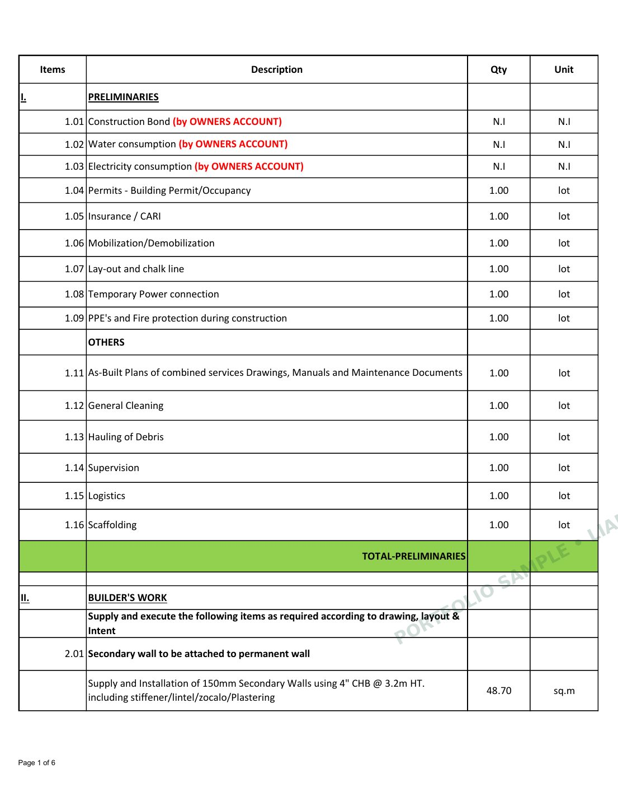
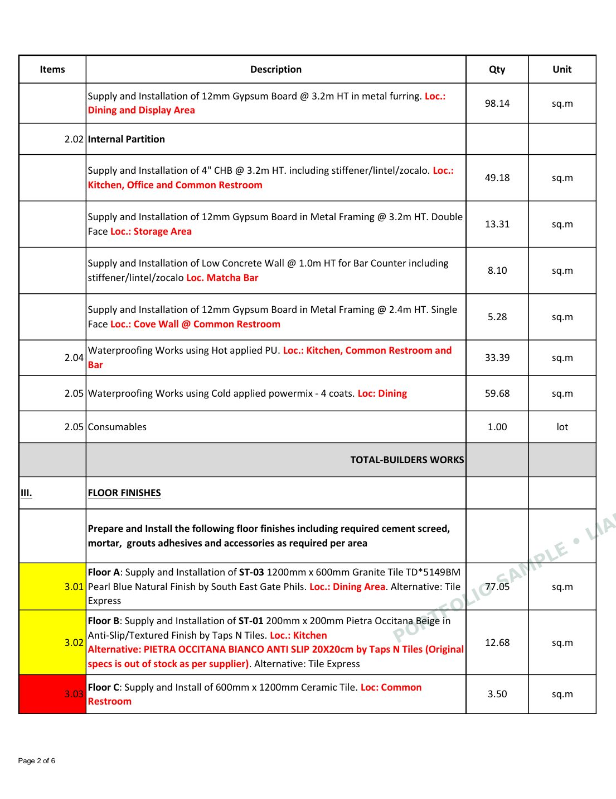
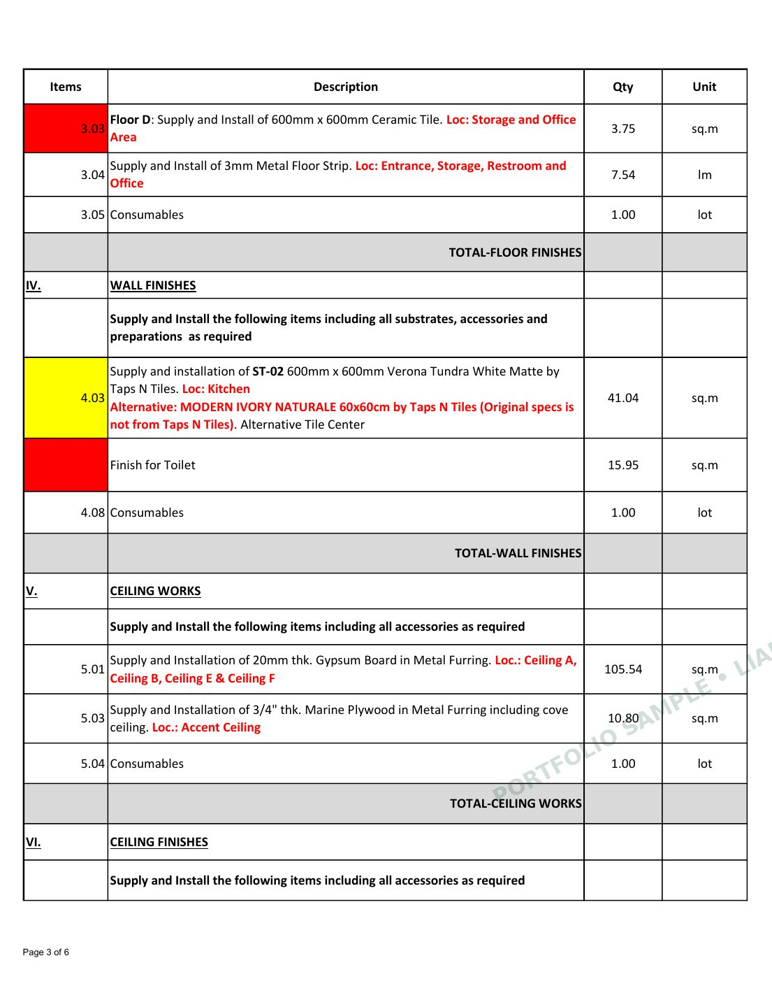
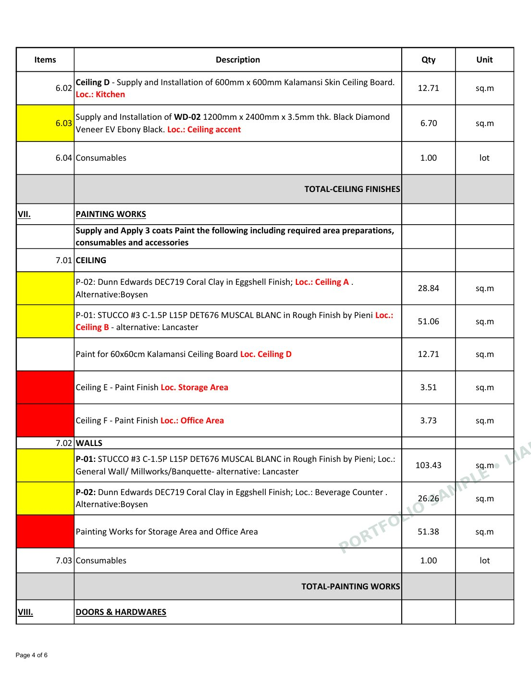
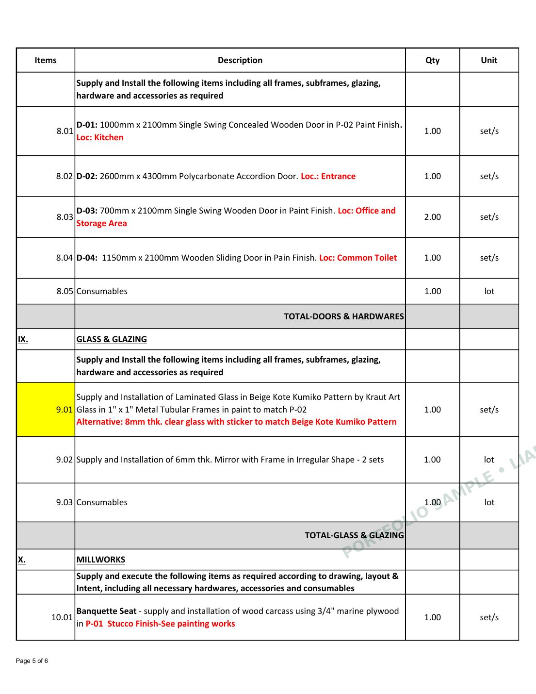
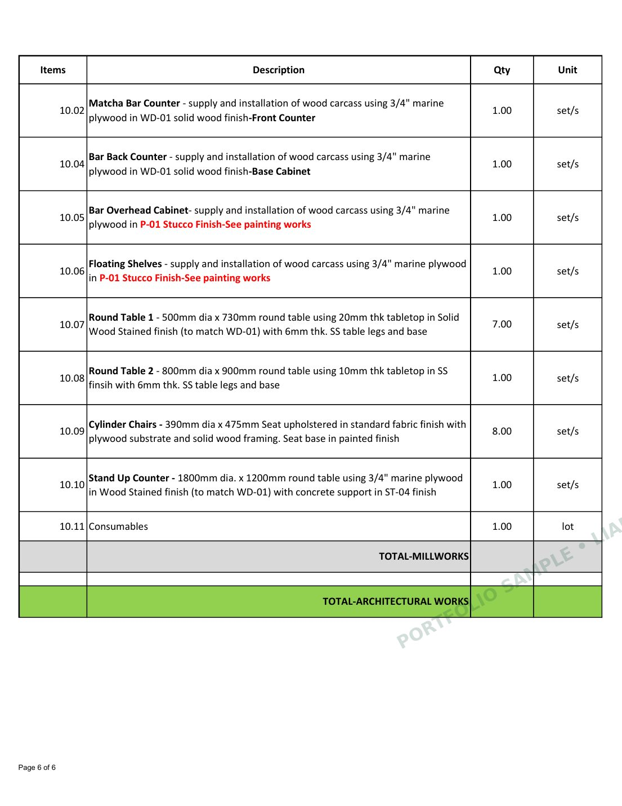

Protected Portfolio Preview
BOQ Sample 1
This work sample is displayed as a watermarked web preview for portfolio viewing. The original PDF is not included in the public portfolio package.

Page 1 of 6

Page 2 of 6

Page 3 of 6

Page 4 of 6

Page 5 of 6

Page 6 of 6
Portfolio sample for viewing only. Images are intentionally optimized and watermarked to reduce reuse of the original document.